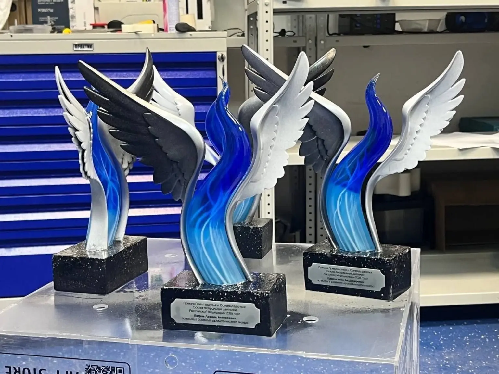
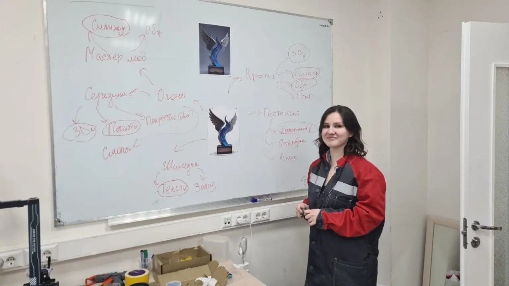
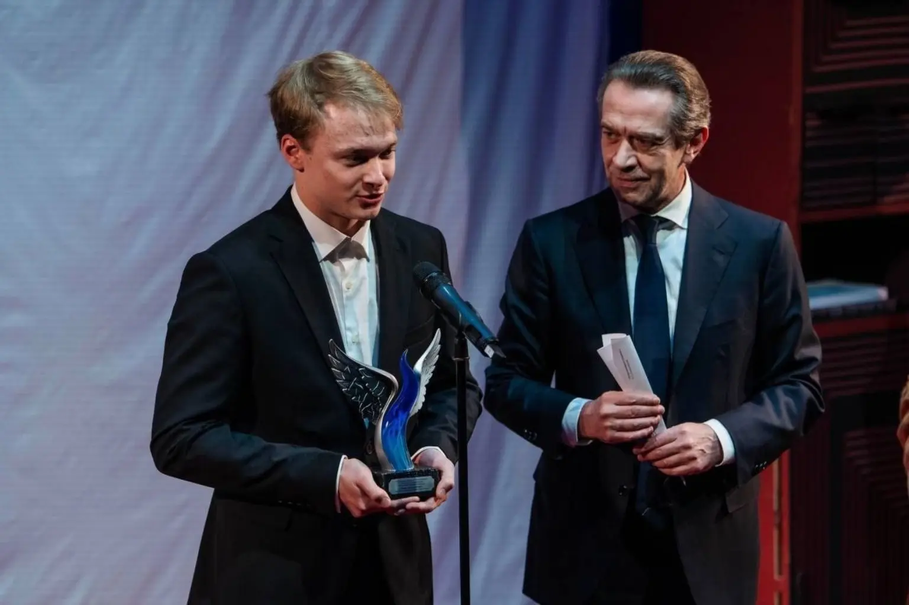

ТЕАТР / СЕРИЯ НАГРАД
Награды для премии СТД России
Белые и синие крылья объединяют серию наград для деятелей театра. Команда Технопарка РГСУ проработала скульптурную форму в цифровой модели и изготовила награды методом 3D-печати.
Вручение
18 декабря 2025 года в Театральном центре «На Страстном».
Технопарк РГСУ · из портфолио STEP_3D
Полная историяПРОЕКТ 01 / 03
Далее · Медведь